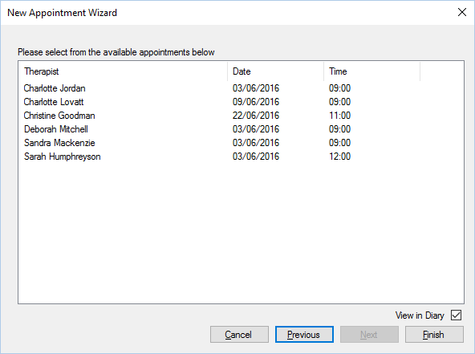

Step 3 is the final step, it will show the very next available date and time for each therapist that
can complete the appointment.

At this point you need to select the appointment date time that suits and click Finish. Upon
doing so you will be able to select the customer for the appointment, or create a new customer.
If “View in Diary” is ticked then the diary will show the newly created appointment when
complete.